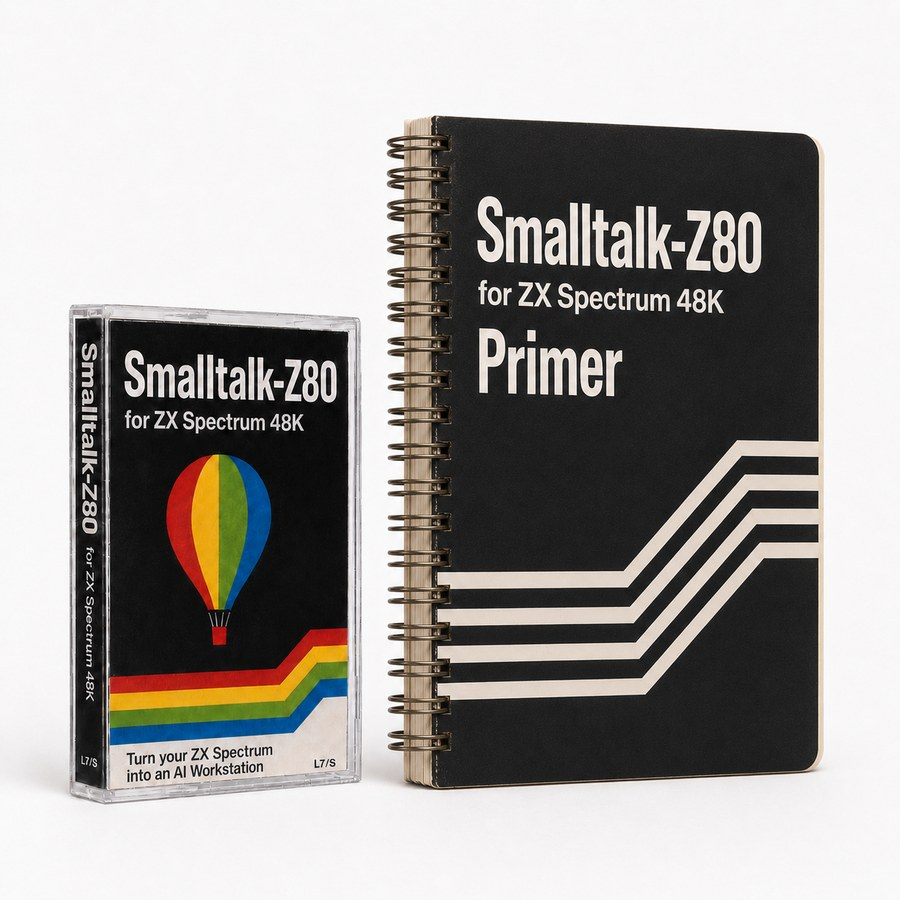
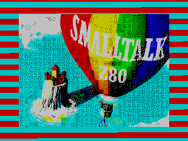
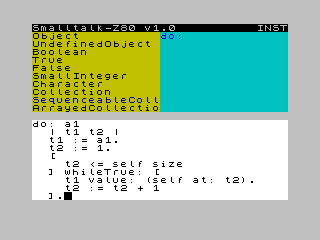
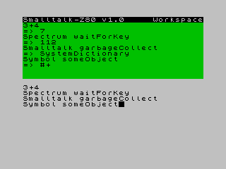
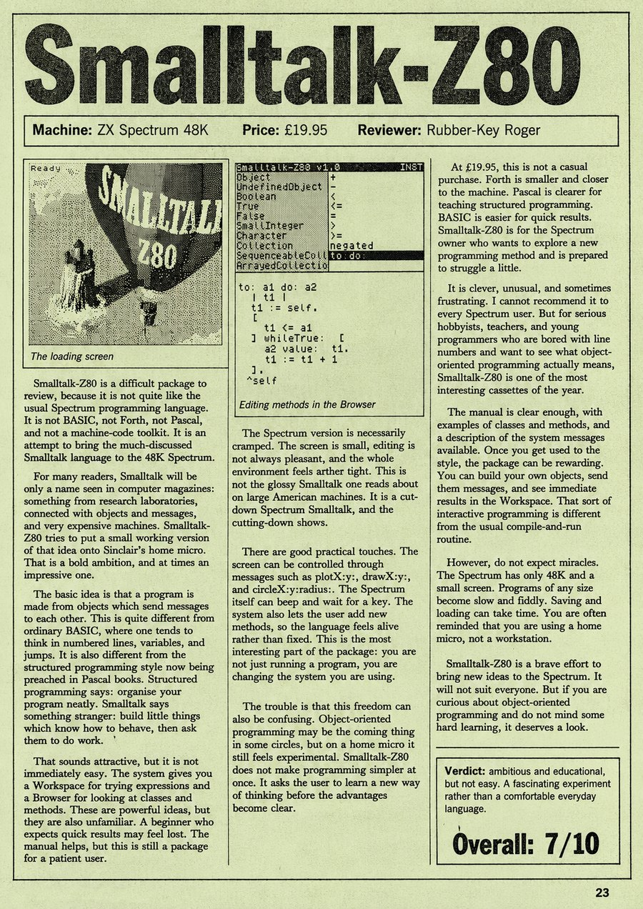

Smalltalk-Z80
Smalltalk-80 for ZX Spectrum 48K
There were implementations of many programming languages for the ZX Spectrum: BASIC, Assembler, Pascal, Forth, Lisp, C, Prolog, Modula-2...
However, it is not widely known that there is another implementation of a famous programming language for the ZX Spectrum: Smalltalk-80, which was released on the Spectrum under the name Smalltalk-Z80.
Although it does not include the original Xerox user interface due to the hardware limitations of this microcomputer, it still provides a basic IDE featuring a Browser, Workspace, and Transcript.
The original textbook has also been preserved. Here you will find details on how to use the program, a description of the language, and a list of differences from its original counterpart.

Download and run
Download the cassette image and the Primer, or try the TAP directly in QAOP.
Note: In QAOP, switch to full screen with F11. It prevents the browser from stealing important Spectrum and Smalltalk-Z80 shortcuts.
The emulator link embeds the TAP in the URL and is experimental; if it fails, open QAOP and load the downloaded TAP.
Screenshots



Magazine reviews
There is only one known contemporary review of this program, though it was not exactly effusive in its praise.
